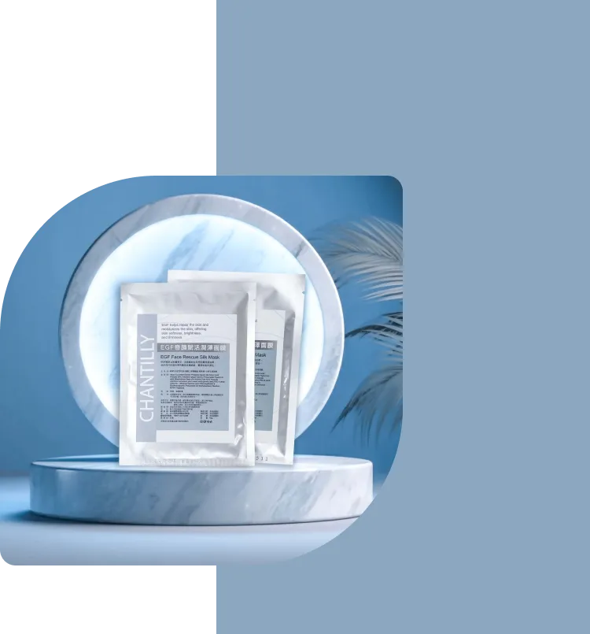
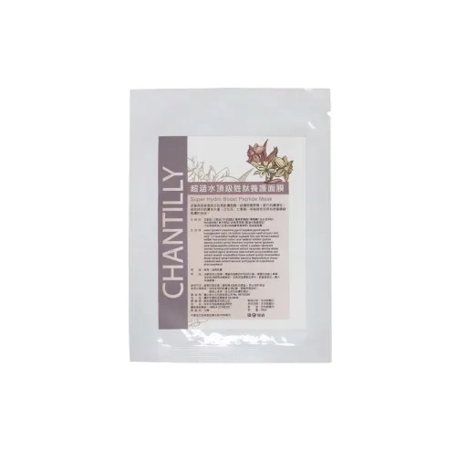

重現光彩瑰麗
只要一片，即刻感受全方位極緻修護
適用各種膚質 | 台灣生產
滋潤保濕 | 肌膚修護 | 細緻肌膚 | 淡化細紋

◎ 玻尿酸
玻尿酸(又為透明質酸hyaluronan)，是一種糖胺聚糖，玻尿酸實際上是皮膚的天然結構成份(天然保濕因子)，並且存在於人體的結締組織。
玻尿酸可以提升肌膚的保濕程度，同時加強肌膚表層的保禦力。
◎ 白茅根萃取
提供肌膚快速水份補充，長效保水功能，防止乾裂現象。使用後感覺肌膚質地柔軟細緻。帶來優越保濕之效果，不含油脂，全膚質適用。對於極乾性或是老化缺水肌膚改善效果亦相當顯著。
◎ 小黃瓜
含維生素C等多種活性成分，具保濕、滋潤。
發現更多產品
你也許也喜歡...

面膜
超涵水頂級胜肽養護面膜
多重高效修護成分改善肌膚粗糙，修護脂質屏障，提升肌膚彈性，有效提升肌膚含水量。百合花、七葉樹…等植物萃取具有舒緩肌膚的功效。